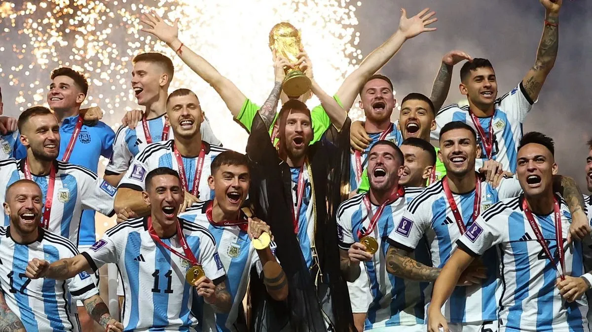

Los primeros años
Argentina comenzó a participar en importantes competiciones internacionales desde los primeros años del fútbol organizado.
La Selección Argentina tiene una extensa historia dentro del fútbol internacional. A lo largo de los años ha participado en numerosas competiciones y se ha convertido en una de las selecciones más reconocidas del mundo.

Argentina comenzó a participar en importantes competiciones internacionales desde los primeros años del fútbol organizado.
En las últimas décadas, la selección continuó consiguiendo títulos y formando nuevas generaciones destacadas de futbolistas.